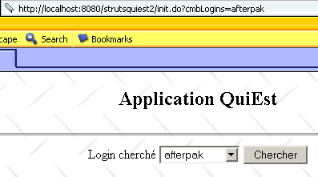
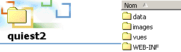
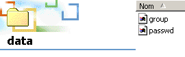
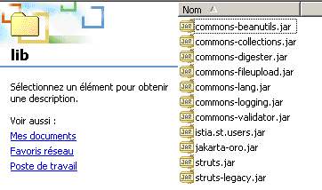

7. Aplicação QuiEst
Descrevemos aqui uma aplicação Struts um pouco mais sofisticada do que as anteriores, que tinham de ser simples para fins didáticos.
7.1. A classe users
Dispomos de uma classe Java que armazena as informações sobre os utilizadores de uma máquina Unix. Estas informações são registadas em três ficheiros específicos:
- /etc/passwd: lista de utilizadores
- /etc/group: lista de grupos
- /etc/aliases: lista de aliases para o correio
O conteúdo destes três ficheiros é o seguinte:
- /etc/passwd
As linhas deste ficheiro têm o seguinte formato:
login:pwd:uid:gid:id:dir:shell
com
nome de utilizador | |
a sua palavra-passe encriptada | |
o seu número de utilizador | |
o seu número de grupo | |
a sua identidade | |
o seu diretório de ligação | |
o seu interpretador de comandos |
Assim, a linha de um utilizador poderia ser a seguinte:
O utilizador anterior tem o n.º 110 e pertence ao grupo 57. É no ficheiro /etc/group que se encontra a definição do grupo 57.
- /etc/group
As linhas deste ficheiro têm o seguinte formato:
nomGroupe:pwd:gid:membre1,membre2,....
com
nome do grupo | |
a sua palavra-passe encriptada — na maioria das vezes, este campo fica em branco | |
o número do grupo | |
nomes de utilizador — este campo pode estar vazio |
Assim, a linha do grupo 57 anterior poderia ser a seguinte:
o que indica que o grupo 57 tem o nome iup2-auto.
- /etc/aliases
As linhas deste ficheiro têm o seguinte formato:
com
alias | |
uma ou mais tabulações | |
nome de utilizador a quem pertence o alias |
Assim, a linha
guillaume.dupond: dupond
significa que o alias guillaume.dupond pertence ao utilizador com o nome de utilizador dupond. Recorde-se que os aliases são utilizados nos endereços de e-mail. Assim, se no exemplo anterior a máquina Unix se chamar shiva.istia.univ-angers.fr, um e-mail endereçado a guillaume.dupond@shiva.istia.univ-angers.fr será entregue na caixa de correio do utilizador de login dupond dessa máquina.
Aqui, não nos vamos debruçar sobre toda a interface da classe users, mas apenas sobre o seu construtor e alguns métodos:
import java.io.*;
import java.util.*;
public class users{
// atributos
private Hashtable usersByLogin=new Hashtable(); // início de sessão --> nome de utilizador, palavra-passe, ..., diretório
private ArrayList erreurs=new ArrayList(); // lista de mensagens de erro
....
// construtor
public users(String usersFileName, String groupsFileName, String aliasesFileName) throws Exception {
// usersFileName: nome do ficheiro de utilizadores com linhas do tipo
// login:pwd:uid:gid:id:dir:shell
// groupsFileName: nome do ficheiro dos grupos com linhas do tipo
// nome:pwd:número:membro1,membro2,..
// aliasesFileName: nome do ficheiro dos aliases com linhas do tipo
// alias:[tab]login
// constrói o dicionário usersByLogin
....
}// construtor
// lista de utilizadores
public Hashtable getUsersByLogin(){
return usersByLogin;
}
// erros
public ArrayList getErreurs(){
return erreurs;
}
dicionário (Hashtable) cujas chaves são os nomes de utilizador do ficheiro «passwd». O valor associado à chave é um array de cadeias de caracteres (String [7]) cujos elementos correspondem aos 7 campos da linha do ficheiro «passwd» associada ao nome de utilizador. Alguns campos podem estar vazios se a linha tiver menos de 7 campos. | |
lista de mensagens de erro — vazia se não houver erros |
7.2. A aplicação web que é
Propõe-se construir a seguinte aplicação web (página de formulário):
 |
n.º | nome | tipo HTML | função |
1 | cmbLogins | <select ...>...</select> | apresenta a lista de todos os logins sobre os quais é possível solicitar informações |
2 | btnChercher | <input type="submit" ...> | para iniciar a pesquisa |
Quando o utilizador clica no botão [Chercher] (2), o login de (1) é solicitado a um objeto U do tipo «users». Se o login existir, obtém-se a seguinte resposta (página de informações):
 |
Como o URL do navegador mostra acima, os parâmetros do formulário são enviados para o servidor através de um GET. Podemos, portanto, fornecer diretamente ao navegador este URL com os parâmetros definidos. É isso que fazemos aqui, para introduzir um login que não existe. Obtém-se a seguinte resposta (página de erros):
 |
7.3. A arquitetura da aplicação
 |
Nesta arquitetura, encontramos os seguintes componentes:
- as vistas:
- logins.jsp, utilizada para apresentar a lista de inícios de sessão (vista 1)
- infos.jsp, utilizada para apresentar as informações relacionadas com um login (vista 2)
- erreurs.jsp, utilizada para apresentar uma lista de erros (vista 3)
- os formulários do tipo ActionForm utilizados pelas ações:
- formLogins, utilizado para recolher os dados do formulário logins.jsp
- as ações:
- SetupLoginAction, que prepara o conteúdo de formulaire.jsp e, em seguida, apresenta esta vista
- InfosLoginAction que processa o conteúdo de logins.jsp assim que este é enviado para o servidor
- ForwardAction, que processa a ligação [Retour vers le formulaire] das vistas infos.jsp e erreurs.jsp
- a classe de negócio «users», utilizada pelas ações para obter os seus dados
- o modelo assegurado pelos três ficheiros de texto simples «passwd», «group» e «aliases»
7.4. Os ficheiros de configuração da aplicação web
7.4.1. O ficheiro server.xml
O contexto da aplicação será denominado /strutsquiest2. Por isso, adicionaremos a seguinte linha no ficheiro server.xml do Tomcat:
Feito isto, reiniciamos o Tomcat, se necessário, para que este tenha em conta o novo contexto. Podemos verificar a validade do mesmo acedendo a http://localhost:8080/strutsquiest2.
7.4.2. O ficheiro web.xml
O ficheiro de configuração web.xml da aplicação será o seguinte:
<?xml version="1.0" encoding="UTF-8"?>
<!DOCTYPE web-app PUBLIC "-//Sun Microsystems, Inc.//DTD Web Application 2.2//EN" "http://java.sun.com/j2ee/dtds/web-app_2_2.dtd">
<web-app>
<servlet>
<servlet-name>strutsquiest2</servlet-name>
<servlet-class>istia.st.struts.quiest.Quiest2ActionServlet</servlet-class>
<init-param>
<param-name>config</param-name>
<param-value>/WEB-INF/struts-config.xml</param-value>
</init-param>
<init-param>
<param-name>passwdFileName</param-name>
<param-value>data/passwd</param-value>
</init-param>
<init-param>
<param-name>groupFileName</param-name>
<param-value>data/group</param-value>
</init-param>
</servlet>
<servlet-mapping>
<servlet-name>strutsquiest2</servlet-name>
<url-pattern>*.do</url-pattern>
</servlet-mapping>
</web-app>
Este ficheiro web.xml traz uma novidade. O controlador Struts já não é o org.apache.struts.action.ActionServlet, mas sim uma classe derivada a que chamámos aqui istia.st.struts.quiest.Quiest2ActionServlet. Isto vai permitir-nos recuperar os dois parâmetros de inicialização, que são o passwdFileName (localização do ficheiro passwd) e o groupFileName (localização do ficheiro group). O ficheiro aliases é desnecessário nesta aplicação.
7.4.3. O ficheiro struts-config.xml
O ficheiro struts-config.xml terá o seguinte conteúdo:
<?xml version="1.0" encoding="ISO-8859-1" ?>
<!DOCTYPE struts-config PUBLIC
"-//Apache Software Foundation//DTD Struts Configuration 1.1//EN"
"http://jakarta.apache.org/struts/dtds/struts-config_1_1.dtd">
<struts-config>
<form-beans>
<form-bean name="formLogins" type="org.apache.struts.action.DynaActionForm">
<form-property name="cmbLogins" type="java.lang.String" initial=""/>
<form-property name="tLogins" type="java.lang.String[]"/>
</form-bean>
</form-beans>
<action-mappings>
<action
path="/init"
name="formLogins"
validate="false"
scope="session"
type="istia.st.struts.quiest.SetupLoginsAction"
>
<forward name="afficherLogins" path="/vues/logins.jsp"/>
<forward name="afficherErreurs" path="/vues/erreurs.jsp"/>
</action>
<action
path="/infosLogin"
name="formLogins"
validate="false"
scope="session"
type="istia.st.struts.quiest.InfosLoginAction"
>
<forward name="afficherErreurs" path="/vues/erreurs.jsp"/>
<forward name="afficherInfos" path="/vues/infos.jsp"/>
</action>
<action
path="/retourLogins"
parameter="/vues/logins.jsp"
type="org.apache.struts.actions.ForwardAction"
/>
</action-mappings>
<message-resources
parameter="istia.st.struts.quiest.ApplicationResources"
null="false"
/>
</struts-config>
Aqui encontram-se as três grandes secções:
- a declaração dos formulários na secção <form-beans>
- a declaração das ações na secção <action-mappings>
- a declaração do ficheiro de recursos em <message-ressources>
7.4.4. Os objetos (beans) de formulário da aplicação
<form-beans>
<form-bean name="formLogins" type="org.apache.struts.action.DynaActionForm">
<form-property name="cmbLogins" type="java.lang.String" initial=""/>
<form-property name="tLogins" type="java.lang.String[]"/>
</form-bean>
</form-beans>
Existe apenas um bean de formulário na nossa aplicação, denominado formLogins e de tipo derivado de DynaActionForm. Será utilizado nas seguintes situações:
- conter os dados necessários para a exibição da vista n.º 1
- recuperar os valores do formulário da vista n.º 1 quando o utilizador o validar (submit)
A estrutura do bean formLogins está ligada ao formulário da vista n.º 1. Vamos analisá-la:
 |
n.º | nome | tipo HTML | função |
1 | cmbLogins | <select ...>...</select> | apresenta a lista de todos os logins sobre os quais é possível solicitar informações |
2 | btnChercher | <input type="submit" ...> | para iniciar a pesquisa |
Distinguamos vários casos:
- do cliente para o servidor, o objeto formLogins é utilizado para conter os valores do formulário HTML acima, que será enviado através do botão [Envoyer]. Por isso, é necessário um campo cmbLogins que receberá o valor do campo HTML, cmbLogins e c.a.d, ou seja, o nome de utilizador escolhido pelo utilizador.
- Do servidor para o cliente, o objeto formLogins é utilizado para fornecer o conteúdo inicial da vista n.º 1. O seu campo tLogins servirá de conteúdo para a lista 1. O seu campo cmbLogins permitirá definir o elemento da lista 1 a selecionar.
7.4.5. As ações da aplicação
As ações são executadas por objetos do tipo Action ou derivados. A configuração das ações é feita dentro das balizas <action-mappings>:
<action-mappings>
<action
path="/init"
name="formLogins"
validate="false"
scope="session"
type="istia.st.struts.quiest.SetupLoginsAction"
>
<forward name="afficherLogins" path="/vues/logins.jsp"/>
<forward name="afficherErreurs" path="/vues/erreurs.jsp"/>
</action>
<action
path="/infosLogin"
name="formLogins"
validate="false"
scope="session"
type="istia.st.struts.quiest.InfosLoginAction"
>
<forward name="afficherErreurs" path="/vues/erreurs.jsp"/>
<forward name="afficherInfos" path="/vues/infos.jsp"/>
</action>
<action
path="/retourLogins"
parameter="/vues/logins.jsp"
type="org.apache.struts.actions.ForwardAction"
/>
</action-mappings>
A ação /init
<action
path="/init"
name="formLogins"
validate="false"
scope="session"
type="istia.st.struts.quiest.SetupLoginsAction"
>
<forward name="afficherLogins" path="/vues/logins.jsp"/>
<forward name="afficherErreurs" path="/vues/erreurs.jsp"/>
</action>
Vamos descrever o funcionamento da ação /init:
- A ação /init ocorre normalmente uma única vez durante o primeiro ciclo de pedido-resposta, em que o utilizador solicita o URL http://localhost:8080/strutsquiest2/init.do
- o objeto formsLogins é criado ou reciclado. É recuperado (reciclagem) ou colocado (criação) na sessão, conforme determinado pelo atributo scope.
- O seu método reset é chamado. Recorde-se que este método não faz nada por predefinição nas classes ActionForm e derivadas. É chamado imediatamente antes da cópia dos dados do pedido do cliente para o objeto ActionForm e serve para limpar o objeto antes dessa cópia. Qual é, neste caso, a solicitação do cliente? A ação /init é acionada quando o URL solicitado é http://localhost:8080/strutsquiest2/init.do. Este URL pode ser solicitado por um GET ou um POST. Basta incluir nesta solicitação parâmetros com os nomes dos campos do formLogins para que estes sejam inicializados, tal como mostra o exemplo seguinte:

- a solicitação contém o parâmetro cmbLogins (afterpak). O controlador Struts copiou, portanto, o valor desse parâmetro para o campo cmbLogins de formLogins. A ação SetupLoginsAction foi então executada e concluiu-se com a exibição da vista logins.jsp. Esta vista possui um formulário cujos campos recebem os seus valores de formLogins. Assim, o campo select HTML, denominado cmbLogins, recebeu o seu valor do campo cmbLogins (=afterpak) de formLogins. É por isso que a lista de logins aparece posicionada no login afterpak.
- Poderíamos divertir-nos a passar também um parâmetro tLogins da seguinte forma:
Isso teria como efeito inicializar o campo tLogins a partir de formLogins com um array {"login1","login2"}. No entanto, veremos mais adiante que a ação SetupLoginsAction atribui um valor ao campo tLogins e substitui a matriz assim criada por uma nova matriz. É esta última que aparece, portanto, na vista logins.jsp.
- A discussão anterior, embora um pouco complexa, tem o mérito de mostrar que não se pode partir do princípio de que a ação /init será acionada sem parâmetros provenientes do cliente. Por isso, pode ser útil utilizar o método reset para limpar o formLogins. Nesse caso, teríamos de derivar a classe DynaActionForm. Não o fizemos aqui.
- Assim que o método reset de formLogins é chamado, o controlador copia os dados do pedido do cliente para os campos com o mesmo nome em formLogins. Normalmente, a ação /init é chamada sem parâmetros do cliente, mas já demonstrámos anteriormente que nada impede o cliente de invocar a ação /init com parâmetros arbitrários. No final desta fase, os campos cmbLogins e tLogins podem, portanto, muito bem ter um valor. Vimos que o campo cmbLogins manteria esse valor, mas não o campo tLogins.
- O controlador verifica, em seguida, o atributo «validate» da ação. Neste caso, este tem o valor «false». O método «validate» de formLogins não será chamado. Por isso, não o iremos escrever.
- O objeto SetupLoginsAction é criado ou reciclado, caso já existisse, e o seu método execute é executado. A sua única função é atribuir um valor ao campo tLogins de formLogins. Este valor é a tabela de logins, tabela que será solicitada à classe de negócio «users». Esta operação pode falhar. É por isso que a ação /init pode ser seguida de duas vistas:
- a vista erreurs.jsp, se a classe «users» não tiver conseguido fornecer a tabela de logins
- a vista logins.jsp, caso contrário
- o controlador irá apresentar uma destas duas vistas
- o ciclo de pedido-resposta da ação /init está concluído.
A ação /infosLogin
<action
path="/infosLogin"
name="formLogins"
validate="false"
scope="session"
type="istia.st.struts.quiest.InfosLoginAction"
>
<forward name="afficherErreurs" path="/vues/erreurs.jsp"/>
<forward name="afficherInfos" path="/vues/infos.jsp"/>
</action>
Vamos descrever o funcionamento da ação / infosLogin:
- a ação /infosLogin ocorre normalmente quando o utilizador clica no botão [Chercher] da vista logins.jsp. É então enviada uma solicitação ao servidor, definida pela baliza HTML <form> da vista:
<html:form name="formLogins" method="get" action="/infosLogin" type="org.apache.struts.action.DynaActionForm">
- vemos que a solicitação é enviada ao servidor através do método GET. O utilizador pode, portanto, digitá-la manualmente:

- o objeto formsLogins é criado ou reciclado. É recuperado (reciclagem) ou colocado (criação) na sessão, conforme determinado pelo atributo scope.
- O seu método `reset` é chamado imediatamente antes da cópia dos dados da solicitação do cliente para o objeto `ActionForm`. Normalmente, tem o formato http://localhost:8080/strutsquiest2/infosLogin.do?cmbLogins=xx, em que xx é um nome de utilizador escolhido da lista de nomes de utilizador. Mas também pode ser qualquer coisa, caso o utilizador tenha utilizado o URL anterior, passando parâmetros arbitrários. Consideremos a seguinte sequência de páginas:

- a ação /infosLogin foi chamada com a cadeia de parâmetros cmbLogins=xx&tLogins=login1&tLogins=login2. Os campos cmbLogins e tLogins de formLogins receberão, portanto, respetivamente, os valores «xx» e {"login1", "login2"}. A ação /infosLogin irá solicitar à classe de negócio «users» as informações associadas ao login «xx». A classe «users» irá responder que esse login não existe. Daí a visualização apresentada acima. Agora, vamos utilizar o link [Retour au formulaire] acima:

- É a ação /retourLogins que é acionada pelo link [Retour au formulaire]. Esta ação limita-se a apresentar a vista logins.jsp sem qualquer ação intermédia. Recorde-se que o campo tLogins serve para alimentar a lista de logins da vista logins.jsp. Como o utilizador alterou este valor para {"login1","login2"}, são estes dois logins que aparecem agora na lista. Mais uma vez, não podemos deixar de insistir na necessidade absoluta de ter em conta, no funcionamento de uma aplicação, o caso de parâmetros arbitrários definidos por um utilizador ou por um programa. A solução para o problema aqui apresentado seria que o link [Retour au formulaire] apontasse para a ação /init. Desta forma, teríamos a certeza de obter a lista correta de logins.
- Voltemos a uma solicitação normal à ação /infosLogin do tipo:
http://localhost:8080/strutsquiest2/infosLogin.do?cmbLogins=afterpak
- O controlador Struts irá atribuir um valor ao campo cmbLogins do objeto ActionForm. O campo tLogins, por sua vez, não receberá nenhum valor (não existe nenhum campo correspondente no pedido enviado). Este comportamento é o que pretendemos. Por isso, não teremos de escrever um método reset personalizado para o formLogins.
- Assim que o método reset de formLogins for chamado, o controlador copia os dados da solicitação do cliente para os campos com o mesmo nome em formLogins. O campo cmbLogins receberá um valor: o nome de utilizador escolhido pelo utilizador (afterpak).
- Em seguida, o controlador verifica o atributo «validate» da ação. Neste caso, este atributo tem o valor «false». O método «validate» de formLogins não será chamado.
- O objeto InfosLoginAction é criado ou reciclado, caso já existisse, e o seu método `execute` é executado. A sua função é obter as informações associadas ao nome de utilizador cmbLogins. Estas informações serão solicitadas à classe de negócio `users`. Esta operação pode falhar (por exemplo, nome de utilizador inexistente). É por isso que a ação /infosLogin pode ser seguida de duas vistas:
- a vista erreurs.jsp, se a classe «users» não tiver conseguido fornecer as informações solicitadas
- a vista infos.jsp, caso contrário
- o controlador irá apresentar uma destas duas vistas
- o ciclo de pedido-resposta da ação /infosLogin está concluído.
A ação /retourLogins
<action
path="/retourLogins"
parameter="/vues/logins.jsp"
type="org.apache.struts.actions.ForwardAction"
/>
- A ação /retourLogins é acionada pela ativação do link [Retour au formulaire] nas vistas erreurs.jsp e infos.jsp.
- Aqui não existe nenhum formulário associado à ação. Passa-se, portanto, imediatamente à execução do método `execute` de um objeto `ForwardAction`, que irá devolver um objeto `ActionForward` que aponta para a vista `/vues/logins.jsp`.
7.4.6. O ficheiro de mensagens da aplicação
A terceira secção do ficheiro struts-config.xml é a do ficheiro de mensagens:
O ficheiro ApplicationResources.properties encontra-se na pasta WEB-INF/classes/istia/st/struts/quiest. O seu conteúdo é o seguinte:
errors.header=<ul>
errors.footer=</ul>
parametreManquant=<li>Le paramètre [{0}] n'a pas été initialisé</li>
usersException=<li>Erreur d'initialisation de l'application : {0}</li>
loginInconnu=<li>Le login [{0}] n'existe pas</li>
7.5. O código das vistas
Se não compreender o código das vistas apresentadas abaixo, o leitor é convidado a rever a lição sobre a gestão de formulários.
7.5.1. A vista logins.jsp
Recorde-se que esta vista é apresentada em dois casos:
- ao chamar a ação /init durante o primeiro ciclo de pedido-resposta
- ao chamar a ação /retourLogins nos ciclos seguintes
O código da vista logins.jsp é o seguinte:
<%@ taglib uri="/WEB-INF/struts-html.tld" prefix="html" %>
<html>
<head>
<title>Quiest - formulaire</title>
</head>
<body background="<html:rewrite page="/images/standard.jpg"/>">
<center>
<h2>Application QuiEst</h2>
<hr>
<html:form name="formLogins" method="get" action="/infosLogin" type="org.apache.struts.action.DynaActionForm">
<table>
<tr>
<td>Login cherché</td>
<td>
<html:select name="formLogins" property="cmbLogins">
<html:options name="formLogins" property="tLogins"/>
</html:select>
</td>
<td>
<html:submit value="Chercher"/>
</td>
</tr>
</table>
</html:form>
</center>
</body>
</html>
7.5.2. A vista infos.jsp
Esta vista é apresentada quando a ação /infosLogin é executada com sucesso. O seu código é o seguinte:
<%@ taglib uri="/WEB-INF/struts-html.tld" prefix="html" %>
<%@ taglib uri="/WEB-INF/struts-bean.tld" prefix="bean" %>
<html>
<head>
<title><bean:write name="infosLoginBean" scope="request" property="titre"/></title>
</head>
<body background="<html:rewrite page="/images/standard.jpg"/>">
<h2><bean:write name="infosLoginBean" scope="request" property="titre"/></h2>
<hr>
<table border="1">
<tr>
<th>login</th><th>pwd</th><th>uid</th><th>gid</th><th>id</th><th>dir</th><th>shell</th>
</tr>
<tr>
<td><bean:write name="infosLoginBean" scope="request" property="infosLogin[0]"/></td>
<td><bean:write name="infosLoginBean" scope="request" property="infosLogin[1]"/></td>
<td><bean:write name="infosLoginBean" scope="request" property="infosLogin[2]"/></td>
<td><bean:write name="infosLoginBean" scope="request" property="infosLogin[3]"/></td>
<td><bean:write name="infosLoginBean" scope="request" property="infosLogin[4]"/></td>
<td><bean:write name="infosLoginBean" scope="request" property="infosLogin[5]"/></td>
<td><bean:write name="infosLoginBean" scope="request" property="infosLogin[6]"/></td>
</tr>
</table>
<br>
<html:link page="/retourLogins.do">
Retour au formulaire
</html:link>
</body>
</html>
Esta vista utiliza um objeto denominado infosLoginBean, inserido na consulta pela ação /infosLogin. Este objeto possui dois campos:
String titre; // título a apresentar na vista
String[] infosLogin; // tabela de informações a apresentar na vista
Iremos detalhar esta classe quando abordarmos o código da classe InfosLoginAction.
7.5.3. A vista erreurs.jsp
Esta vista é apresentada quando as ações /init ou /infosLogin terminam com um erro. O seu código é o seguinte:
<%@ taglib uri="/WEB-INF/struts-html.tld" prefix="html" %>
<html>
<head>
<title>Application QuiEst - erreurs</title>
</head>
<body background="<html:rewrite page="/images/standard.jpg"/>">
<h2 align="center">Application QuiEst - Erreurs</h2>
<hr>
<h2>Les erreurs suivantes se sont produites</h2>
<html:errors/>
<html:link page="/retourLogins.do">
Retour au formulaire
</html:link>
</body>
</html>
7.6. As classes Java
O ficheiro web.xml faz referência a uma classe Java:
<web-app>
<servlet>
<servlet-name>strutsquiest2</servlet-name>
<servlet-class>istia.st.struts.quiest.Quiest2ActionServlet</servlet-class>
....
</servlet>
...
</web-app>
O ficheiro de configuração struts-config.xml faz referência a duas classes Java:
<action
path="/infosLogin"
name="formLogins"
validate="false"
scope="session"
type="istia.st.struts.quiest.InfosLoginAction"
>
<forward name="afficherErreurs" path="/vues/erreurs.jsp"/>
<forward name="afficherInfos" path="/vues/infos.jsp"/>
</action>
<action
path="/init"
name="formLogins"
validate="false"
scope="session"
type="istia.st.struts.quiest.SetupLoginsAction"
>
<forward name="afficherLogins" path="/vues/logins.jsp"/>
<forward name="afficherErreurs" path="/vues/erreurs.jsp"/>
</action>
7.6.1. A classe Quiest2ActionServlet
A classe Quiest2ActionServlet deriva da classe ActionServlet, a classe do controlador Struts. Derivamos a classe ActionServlet para personalizar o seu método init. Com efeito, este método, executado uma única vez no momento do carregamento inicial do servlet, permitir-nos-á construir um objeto de negócio do tipo users. Este objeto só precisa de ser construído uma única vez e o método init é um bom local para realizar essa construção. O objeto «users» necessita de dois ficheiros para ser construído: os ficheiros «passwd» e «group». A localização destes dois ficheiros é passada como parâmetros para a servlet no ficheiro «web.xml» da aplicação:
<servlet>
<servlet-name>strutsquiest2</servlet-name>
<servlet-class>istia.st.struts.quiest.Quiest2ActionServlet</servlet-class>
<init-param>
<param-name>config</param-name>
<param-value>/WEB-INF/struts-config.xml</param-value>
</init-param>
<init-param>
<param-name>passwdFileName</param-name>
<param-value>data/passwd</param-value>
</init-param>
<init-param>
<param-name>groupFileName</param-name>
<param-value>data/group</param-value>
</init-param>
</servlet>
O código do servlet é o seguinte:
package istia.st.struts.quiest;
import java.util.*;
import javax.servlet.*;
import org.apache.struts.action.*;
import istia.st.users.*;
public class Quiest2ActionServlet
extends ActionServlet {
// atributos do servlet
private users u = null;
private ActionErrors erreurs = new ActionErrors();
private String[] tLogins;
//init
public void init() throws ServletException {
// não se esqueça de inicializar a classe pai
super.init();
// variáveis locais
final String[] initParams = {"passwdFileName", "groupFileName"};
Properties params = new Properties();
// recuperam-se os parâmetros de inicialização do servlet
ServletConfig config = getServletConfig();
String servletPath = config.getServletContext().getRealPath("/");
for (int i = 0; i < initParams.length; i++) {
String valeur = config.getInitParameter(initParams[i]);
if (valeur == null) {
erreurs.add(ActionErrors.GLOBAL_ERROR, new ActionError("parametreManquant", initParams[i]));
valeur = "";
}
// armazenamos o parâmetro
params.setProperty(initParams[i], valeur);
} //for
// retornar se tiverem ocorrido erros de inicialização
if (erreurs.size() != 0) {
return;
}
// cria-se um objeto «users»
try {
u = new users(servletPath + "/" + params.getProperty("passwdFileName"),
servletPath + "/" + params.getProperty("groupFileName"), null);
}
catch (Exception ex) {
erreurs.add(ActionErrors.GLOBAL_ERROR, new ActionError("usersException", ex.getMessage()));
return;
} //catch
// recupera-se a lista de logins
tLogins = new String[u.getUsersByLogin().size()];
Enumeration eLogins = u.getUsersByLogin().keys();
for (int i = 0; i < tLogins.length; i++) {
tLogins[i] = (String) eLogins.nextElement();
}
// ordenamos os logins
Arrays.sort(tLogins);
} //init
// método de acesso às informações privadas do servlet
public Object[] getInfos() {
return new Object[] {erreurs, u, tLogins};
}
}
Em resumo, o funcionamento do método init é o seguinte:
- em primeiro lugar, é chamado o método init da classe pai (ActionServlet) para que esta se inicialize corretamente
- depois, são lidos os parâmetros de inicialização. Se faltar algum, o atributo privado ActionErrors «erros» é preenchido.
- Se os parâmetros de inicialização estiverem presentes, é criado um objeto «users». Esta criação pode lançar uma exceção. Nesse caso, o atributo «ActionErrors» (erros) é preenchido.
- Se a criação decorrer sem problemas, extrai-se do objeto criado a lista de todos os logins e esta é ordenada numa matriz que é colocada no atributo privado String[] tLogins.
- O objeto «users» criado é armazenado no atributo privado «users u».
- O método público getInfos permite obter os três atributos privados (u, erros, tLogins) numa matriz de objetos.
7.6.2. A classe SetupLoginsAction
Esta ação tem como objetivo inicializar o objeto DynaActionForm formLogins. Este objeto, colocado na sessão, não precisará de ser reinicializado posteriormente. A ação SetupLoginsAction ocorre, portanto, apenas uma vez. O seu código é o seguinte:
package istia.st.struts.quiest;
import java.io.*;
import javax.servlet.*;
import javax.servlet.http.*;
import org.apache.struts.action.*;
public class SetupLoginsAction
extends Action {
public ActionForward execute(ActionMapping mapping, ActionForm form,
HttpServletRequest request, HttpServletResponse response) throws IOException,ServletException {
// prepara o formulário a apresentar
// recuperam-se as informações do servlet controlador
// informações=(ActionErrors erros, utilizadores u, String[] tLogins)
Object[] infos = ( (Quiest2ActionServlet)this.getServlet()).getInfos();
// Houve erros de inicialização?
ActionErrors erreurs = (ActionErrors) infos[0];
if (!erreurs.isEmpty()) {
this.saveErrors(request, erreurs);
return mapping.findForward("afficherErreurs");
}
// introduzimos os dados de início de sessão no formulário
DynaActionForm formLogins=(DynaActionForm) form;
formLogins.set("tLogins",infos[2]);
return mapping.findForward("afficherLogins");
}
}
Tal como acontece com todas as ações do Struts, o código encontra-se no método execute. Este:
- obtém do controlador Struts as informações que este armazenou através do seu método init. É o método getServlet() da classe Action que permite isso.
- Entre estes encontra-se o atributo ActionErrors «erros do controlador». Se esta lista de erros não estiver vazia, é incluída na consulta e solicita-se a exibição da vista erreurs.jsp.
- Se a lista de erros estiver vazia, atribui-se ao campo tLogins do bean formLogins a lista de inícios de sessão criada inicialmente pelo controlador. Em seguida, solicita-se a exibição da vista logins.jsp, que irá apresentar a lista de inícios de sessão.
7.6.3. As classes InfosLoginBean e InfosLoginAction
A ação InfosLoginAction tem como objetivo recuperar as informações associadas ao login escolhido pelo utilizador e apresentá-las a este. As informações serão reunidas num objeto do tipo InfosLoginBean:
package istia.st.struts.quiest;
public class InfosLoginBean implements java.io.Serializable{
// bean que contém as informações necessárias para a página de informações
private String titre;
private String[] infosLogin;
// construtor
public InfosLoginBean(String titre, String[] infosLogin){
this.titre=titre;
this.infosLogin=infosLogin;
}
// getters
public String getTitre(){
return this.titre;
}
public String[] getInfosLogin(){
return this.infosLogin;
}
public String getInfosLogin(int i){
return this.infosLogin[i];
}
}
A classe anterior é um bean, c.a.d. Trata-se de uma classe Java em que um atributo privado T unAttribut é automaticamente associado a dois métodos privados:
- void setUnAttribut(T valor){unAttribut=valor;}
- T getUnAttribut(){ return unAttribut;}
Note-se a sintaxe especial dos métodos get e set. Se o atributo for um tabuleiro T[] unAttribut, é possível criar métodos get e set para os elementos do tabuleiro:
- void setUnAttribut(T valor, int i){unAttribut[i]=valor;}
- T getUnAttribut(int i){ return unAttribut[i];}
Para compreender melhor, vamos rever o código da vista infos.jsp, que deve ser enviada na sequência da ação InfosLoginAction:
<%@ taglib uri="/WEB-INF/struts-html.tld" prefix="html" %>
<%@ taglib uri="/WEB-INF/struts-bean.tld" prefix="bean" %>
<html>
<head>
<title><bean:write name="infosLoginBean" scope="request" property="titre"/></title>
</head>
<body background="<html:rewrite page="/images/standard.jpg"/>">
<h2><bean:write name="infosLoginBean" scope="request" property="titre"/></h2>
<hr>
<table border="1">
<tr>
<th>login</th><th>pwd</th><th>uid</th><th>gid</th><th>id</th><th>dir</th><th>shell</th>
</tr>
<tr>
<td><bean:write name="infosLoginBean" scope="request" property="infosLogin[0]"/></td>
<td><bean:write name="infosLoginBean" scope="request" property="infosLogin[1]"/></td>
<td><bean:write name="infosLoginBean" scope="request" property="infosLogin[2]"/></td>
<td><bean:write name="infosLoginBean" scope="request" property="infosLogin[3]"/></td>
<td><bean:write name="infosLoginBean" scope="request" property="infosLogin[4]"/></td>
<td><bean:write name="infosLoginBean" scope="request" property="infosLogin[5]"/></td>
<td><bean:write name="infosLoginBean" scope="request" property="infosLogin[6]"/></td>
</tr>
</table>
<br>
<html:link page="/retourLogins.do">
Retour au formulaire
</html:link>
</body>
</html>
Consideremos a seguinte baliza:
Solicita a gravação do valor do campo «título» (property) do objeto infosLoginBean (name) incluído na consulta (scope). O valor a gravar será obtido através de request.getAttribute("infosLoginBean").getTitre(). Por conseguinte, é necessário que o método getTitre exista na classe InfosLoginBean. É esse o caso. A baliza
solicita a gravação do valor do elemento infosLogin[0] do objeto infosLoginBean incluído na consulta. O valor a escrever será obtido através de request.getAttribute("infosLoginBean").getInfosLogin(0). É, portanto, necessário que o método getInfosLogin(int i) exista na classe InfosLoginBean. É esse o caso.
A classe InfosLoginAction tem como objetivo construir o objeto InfosLoginBean anterior a partir de um nome de utilizador escolhido pelo utilizador. O seu código é o seguinte:
package istia.st.struts.quiest;
import java.io.*;
import javax.servlet.*;
import javax.servlet.http.*;
import org.apache.struts.action.*;
import istia.st.users.*;
public class InfosLoginAction
extends Action {
public ActionForward execute(ActionMapping mapping, ActionForm form,
HttpServletRequest request, HttpServletResponse response) throws IOException,ServletException {
// deve apresentar as informações relacionadas com um login
// recupera as informações do servlet controlador
// informações=(ActionErrors erros, utilizadores u, LoginBean[] tLogins)
Object[] infos = ( (Quiest2ActionServlet)this.getServlet()).getInfos();
// houve erros de inicialização?
ActionErrors erreurs = (ActionErrors) infos[0];
if (!erreurs.isEmpty()) {
this.saveErrors(request, erreurs);
return mapping.findForward("afficherErreurs");
}
// Primeiro, recuperar este login
String login = (String) ( (DynaActionForm) form).get("cmbLogins");
// Há alguma coisa?
if (login == null) {
// Não é normal — vamos reenviar o formulário de inícios de sessão
DynaActionForm formLogins=(DynaActionForm) form;
formLogins.set("tLogins",infos[2]);
return mapping.findForward("afficherLogins");
}
// Temos um login — estamos à procura dele
String[] infosLogin = (String[]) ( (users) infos[1]).getUsersByLogin().get(login);
// Encontrámos?
if (infosLogin == null) {
// O login não foi encontrado — exibimos a página de erros
ActionErrors erreurs2=new ActionErrors();
erreurs2.add(ActionErrors.GLOBAL_ERROR, new ActionError("loginInconnu", login));
this.saveErrors(request, erreurs2);
return mapping.findForward("afficherErreurs");
}
// o login foi encontrado — colocamos as informações encontradas na solicitação
String titre="Application QuiEst - login["+login+"]";
InfosLoginBean infosLoginBean= new InfosLoginBean(titre,infosLogin);
request.setAttribute("infosLoginBean",infosLoginBean);
return mapping.findForward("afficherInfos");
}
}
O funcionamento do método **execute** é o seguinte:
- recuperam-se as informações recolhidas pelo controlador Struts durante a sua inicialização. Se este tiver detetado erros, a execução é interrompida nessa altura, com um pedido para que esses erros sejam apresentados.
- Verifica-se se existe efetivamente um login. Se o utilizador tiver passado pelo formulário de seleção de um login, o login estará presente. No entanto, o utilizador pode muito bem digitar o URL da ação diretamente no seu navegador sem passar parâmetros. Se não houver um login, a lista de logins é exibida novamente.
- Se houver um login, solicitam-se as informações associadas à classe de negócio «users». Se esta não encontrar o login procurado, é apresentada a página de erros. Caso contrário, é criado um objeto InfosLoginBean para nele colocar as informações de que a vista infos.jsp necessita. Este objeto é incluído na requisição e a página infos.jsp é apresentada.
7.7. Implementação
A estrutura da aplicação é a seguinte:
 |  |
 |  |
 |  |
 |
7.8. Conclusão
Utilizámos o Struts numa aplicação realista que recorre a uma classe de negócio. Além disso, demonstrámos que é necessário prestar especial atenção à solicitação enviada por um cliente e não fazer quaisquer suposições sobre a sua natureza. Uma solicitação pode ser de qualquer tipo e qualquer aplicação deve começar por verificar a sua validade.